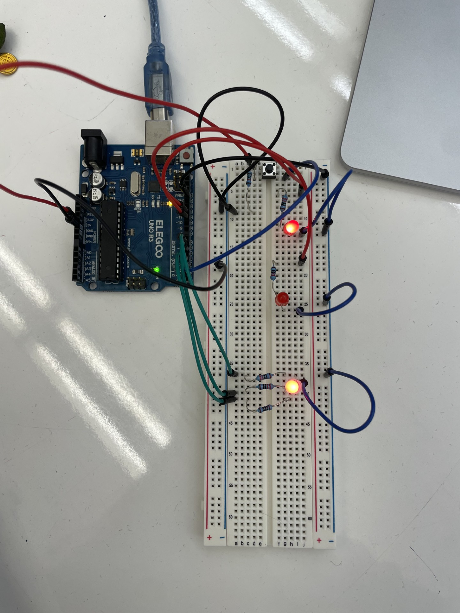
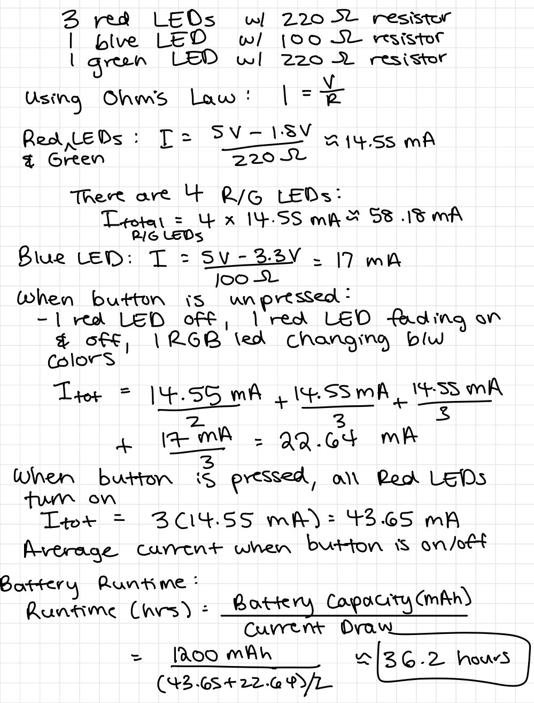

Fig 1a & 1b: Circuit Schematic and Calculations
This schematic depicts my set up of 2 red LEDs, 1 RBG LED, and a button.
I used 220Ohm resistors with red LEDs and a 100Ohm resistor with the blue LED (although 220 would work fine too). I used a 10KOhm resistor with the button.
Fig 2: Circuit Setup
I used 6 digital pins in order to individually control each LED and the button.
Firmware
const int button = 2; // Button pin
const int red = 6; // Red LED pin
const int blue = 3; // Blue LED pin
const int green = 5; // Green LED pin
void setup() {
pinMode(10, OUTPUT); // Set pin 10 as output
pinMode(11, OUTPUT); // Set pin 11 as output
pinMode(red, OUTPUT); // Set red LED pin as output
pinMode(blue, OUTPUT); // Set blue LED pin as output
pinMode(green, OUTPUT); // Set green LED pin as output
pinMode(button, INPUT); // Set button pin as input
}
void loop() {
if (digitalRead(button) == HIGH) { // Check if button is pressed
digitalWrite(10, HIGH); // Turn off pin 10
digitalWrite(11, HIGH); // Turn on pin 11
digitalWrite(red, HIGH); // Turn on red LED
digitalWrite(blue, LOW); // Turn off blue LED
digitalWrite(green, LOW); // Turn off green LED
} else {
digitalWrite(10, LOW);
for (int i = 0; i < 255; i += 50) { // Loop with step of 50
analogWrite(11, i); // Fade pin 11 up
delay(100); // Wait 100ms
analogWrite(11, 255 - i); // Fade pin 11 down
delay(100); // Wait 100ms
rainbow(i); // Call rainbow function
}
}
}
void rainbow(int i) {
analogWrite(red, 255 - i); // Adjust red brightness
analogWrite(green, i); // Adjust green brightness
analogWrite(blue, 0); // Turn off blue
delay(50); // Wait 50ms
analogWrite(red, 0); // Turn off red
analogWrite(green, 255 - i); // Adjust green brightness
analogWrite(blue, i); // Adjust blue brightness
delay(50); // Wait 50ms
analogWrite(red, i); // Adjust red brightness
analogWrite(green, 0); // Turn off green
analogWrite(blue, 255 - i); // Adjust blue brightness
delay(50); // Wait 50ms
}
My code controls LEDs based on a button press. When I press the button, it turns on all the red LEDs. If I don’t press the button, the LEDs fade in and out pin 11 and the RGB LED cycles through different colors in a "rainbow" effect using the rainbow() function. The loop handles both the button behavior and the LED animations.
Fig 3: Fade GIF

When the button is not pressed, the RGB led will fade between colors and one of the red LEDs will fade on and off. When the button is pressed, all the LEDs will light up as a solid red.
Additional Questions:
Fig 4: Time vs Voltage Chart
This chart depicts 3 lines representing the voltage across and LED with analogWrite(led, 64), analogWrite(led, 128), and analogWrite(led, 255). The X axis is time and the Y axis is voltage. The analogWrite() method sets the value of a PWM output pin and is on a scale of 0-255, such that analogWrite(255) requests a 100% duty cycle (always on) and analogWrite(128) is a 50% duty cycle (on half the time). It creates the appearance of a dimmer light by turning on and off so fast that our eyes register it as dimmer.
One cycle is 2 milliseconds long (according to the Arduino website). So, analogWrite(led, 128) would have a pulse width of 2ms/(255/164) = 1ms, and analogWrite(led, 64) would have a pulsewidth of 2ms/(255/64) = 0.5ms.
Fig 5: Question 2 Calculations
Given my schematic, circuit, and firmware, assuming the only thing that draws current is my LEDs, my circuit would run for approximately 16 hours if powered by a 1200 mAh battery.